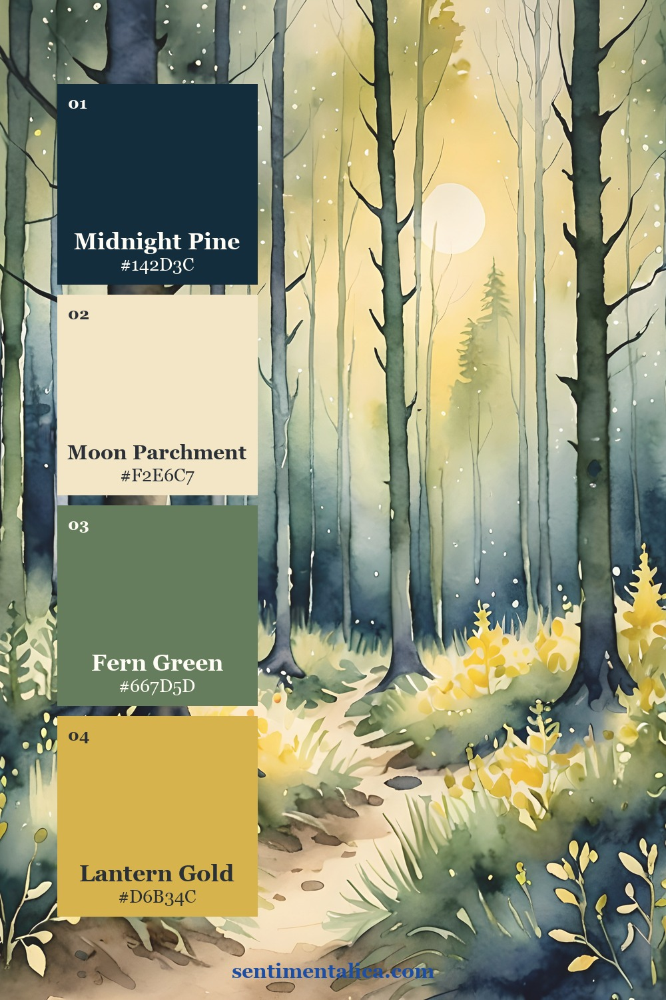
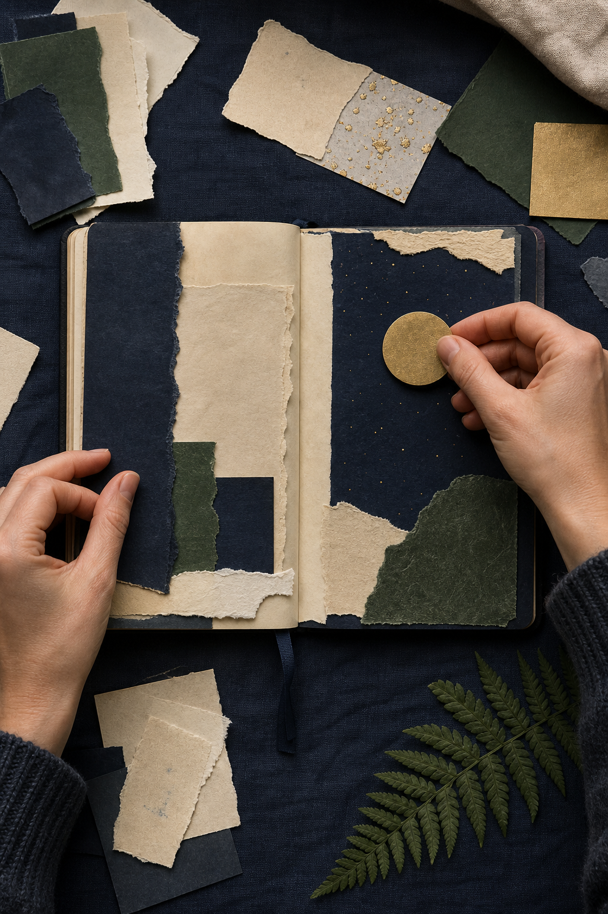
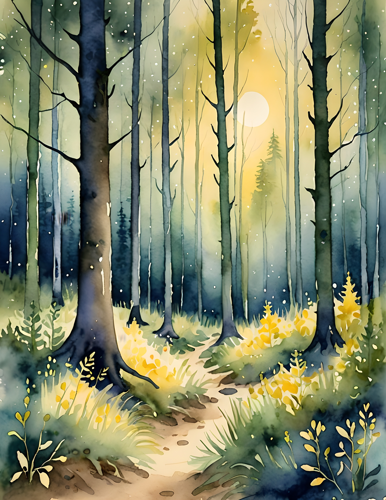
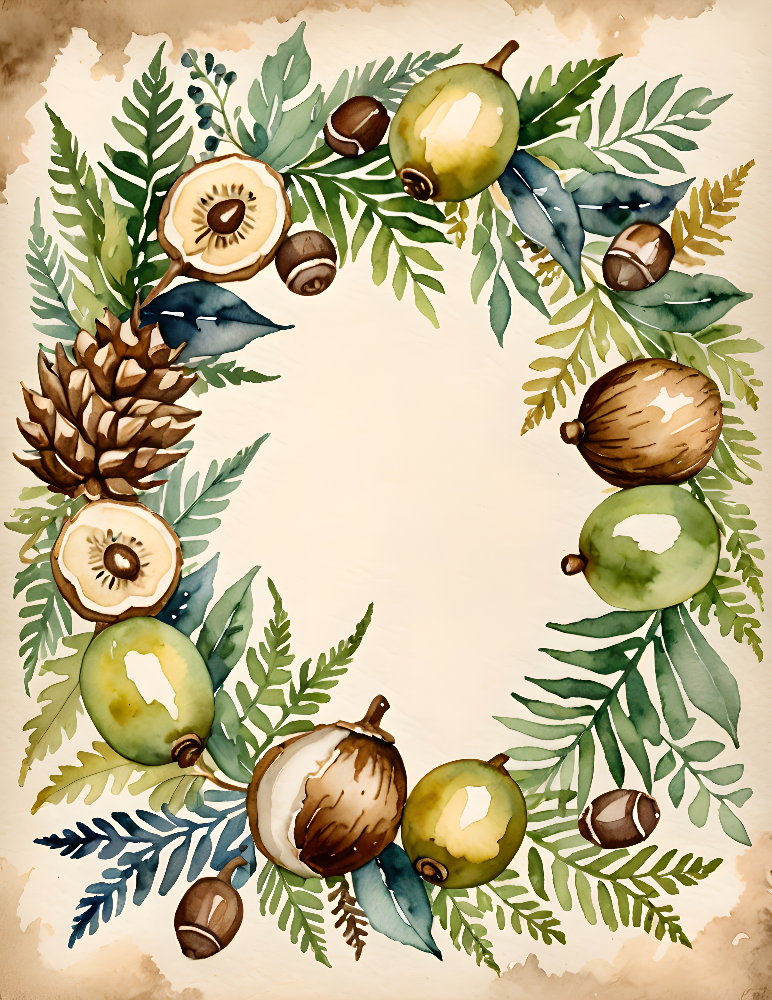
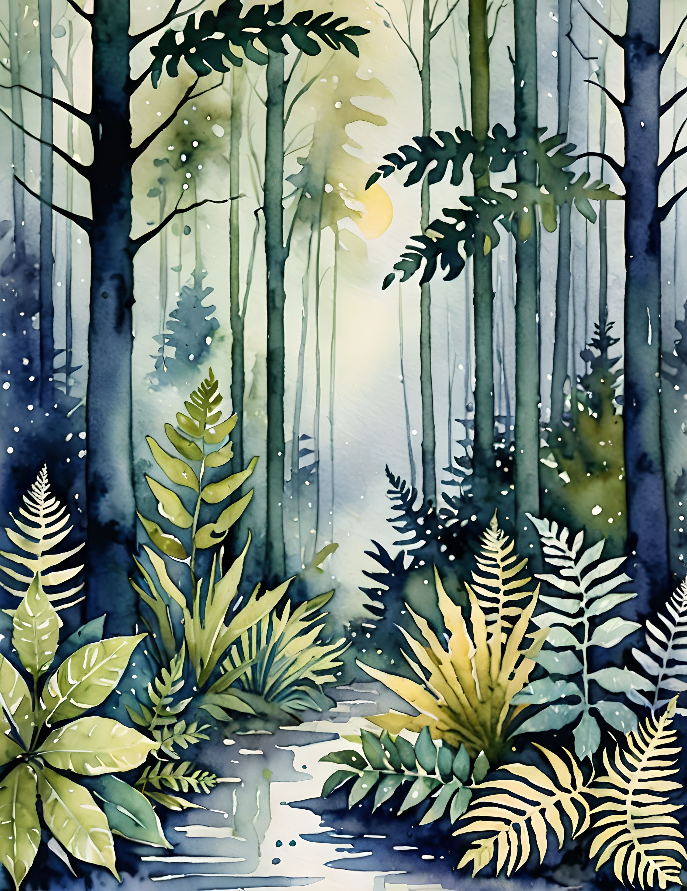

Halloween color does not have to begin with bright orange and purple. A moonlit forest offers a quieter direction: midnight blue-green for shadow, pale parchment for light, fern green for life, and a restrained gold accent that feels like a lantern in the distance.

Make Midnight Pine the anchor
Midnight Pine — #142D3C should carry the deepest shapes: a page mat, pocket, journal cover, or broad painted edge. It reads as almost black but keeps enough blue and green to feel woodland rather than stark.

Give Moon Parchment the most space
Moon Parchment — #F2E6C7 is the resting color. Use it for writing blocks, torn book paper, vellum-backed moons, and broad open areas. It keeps dark layers readable and stops the spread from becoming visually heavy.

Repeat Fern Green in natural shapes
Fern Green — #667D5D works best in irregular forms: leaf silhouettes, fabric tabs, torn painted paper, and botanical borders. Repeat it in two or three different sizes so the page feels gathered from a forest rather than assembled from matching supplies.
Reserve Lantern Gold for the reveal
Lantern Gold — #D6B34C should be the smallest color. Add it as a moon, eyelet, wax mark, thread, or narrow painted line. One clear golden point will appear brighter against Midnight Pine than several scattered yellow embellishments.

Build the spread in this order
Lay down parchment first, add one large Midnight Pine shape, and overlap it with a smaller fern layer. Check the balance before adding gold. The accent belongs at the point where you want the reader to pause: beside a date, at the opening of a pocket, or behind a translucent moon.

Use Halloween symbols with restraint
A crescent, black branch, tiny moth, or handwritten October date is enough to turn the woodland palette toward Halloween. For an autumn journal, omit the symbol and add an acorn, dried fern, or weather note instead. The color system remains useful across the entire season.
See the palette across the Moon Forest collection



The Moon Forest commercial-use watercolor image collection gives this palette a ready-made source of paths, ferns, moonlight, and woodland details. Combine one featured image with your own handwriting and saved autumn fragments so the finished journal still tells a personal story.
Image note: Some visuals in this article were created with AI and curated by Sentimentalica. Palette cards and carousel images use genuine pages from the featured collection.